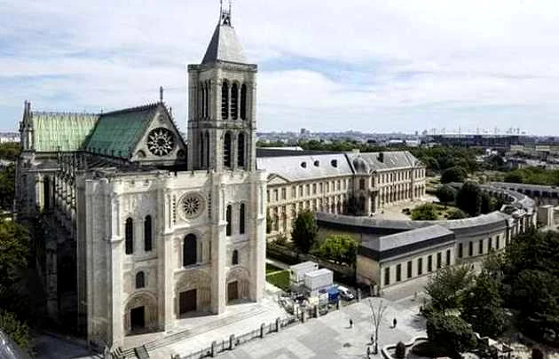
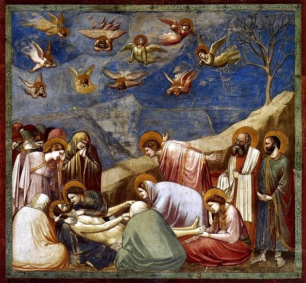

ARte gótica
A arte gótica foi uma expressão artística da Baixa Idade Média (século XII) que perdurou até o Renascimento.
Denominada de arte das catedrais, ela era realizada nas cidades. Foi uma reação ao estilo românico e pretendeu rivalizar com os mosteiros e basílicas que eram construídas no campo.
Isso porque nesse momento, as cidades começaram a crescer por conta da economia fundamentada no comércio.
Anteriormente, as vivências coletivas estavam concentradas no campo e os mosteiros consistiam nos locais de desenvolvimento intelectual e artístico.
O rock gótico deu origem a uma subcultura mais ampla que inclui estilo de vida, clubes, moda, fanzines, revistas e publicações desde a década de 1980.

O marco histórico desse movimento ocorreu nas imediações de Paris, quando a Abadia Real de Saint-Denis foi construída, entre os anos de 1137 e 1144.
Essa basílica é considerada a primeira edificação com características da arte gótica, como sua fachada com três portais que levam às três naves dentro da igreja.

Posteriormente, a Arte Gótica irá se expandir para Inglaterra, Alemanha, Itália, Polônia e Península Ibérica.
Contudo, esta arte grandiosa somente foi possível após a solidificação das monarquias. Isso permitiu o desenvolvimento comercial e urbano, levando ao desenvolvimento das rotas comerciais e favorecendo, ainda mais, o crescimento das cidades.
Os recursos para obras tão magníficas eram obtidos mediante a contribuições dos fiéis, principalmente daqueles que compunham a burguesia em ascensão.
Portanto, a Arte Gótica marca o triunfo das cidades, onde a Igreja percebe ter o apoio de uma grande parcela dos fiéis, para quem irá construir catedrais. Elas representavam símbolos do poder político da Igreja e econômico da burguesia.
Serão as catedrais a exaltarem a beleza do ideal divino, por meio de uma harmonia permeada pela religiosidade.
Origem do termo "gótico"
Quando foi criado, esse estilo artístico não era intitulado "gótico". O termo foi criado posteriormente, quando o renascentista Giorgio Vassari se referiu de maneira pejorativa à esse tipo arte, no século XVI. Ele traça um paralelo com os godos, povo bárbaro que invadiu e destruiu Roma, em 410. Dessa forma, ele expressa sua rejeição a esse gênero de arte. Mais tarde o termo foi incorporado, perdeu o caráter aviltante e ficou relacionado à arquitetura dos arcos curvilíneos.
Arquitetura Gótica

A arquitetura gótica é o resultado dos avanços técnicos obtidos pelas corporações de construtores.
Eles conseguiram dominar a geometrização e suas relações matemáticas com um objetivo muito claro: a verticalidade, visto que buscavam um direcionamento para o céu.
A arquitetura foi a principal expressão da arte gótica e a ela estará atrelada à pintura e à escultura.
A desmaterialização das paredes, agora mais finas e leves, bem como a distribuição da luz no espaço, possibilitada por um número maior de vãos e janelas, permitiu um espaço mais livre e luminoso.
A luz mística e a grandiosidade constituem o veículo para comunhão com o divino.
O arco em ponta e a rosácea - também chamada de mandala - serão atributos continuamente presentes nesse estilo arquitetônico, o qual busca substituir o horizontalismo românico pela verticalidade gótica.

Escultura Gótica
A escultura gótica também expressa o desejo de verticalidade. Contudo, esboça também o naturalismo capaz de atribuir movimento e vida às esculturas, as quais são, quase sempre, um complemento à arquitetura.
Também era comum a presença de esculturas de monstros ou figuras humanas nos telhados das igrejas góticas, a fim de escoar as águas pluviais. Essas representações são intituladas gárgulas.

Pintura Gótica
A pintura gótica irá se delinear claramente em meados de 1350, quando terá lugar fora da arquitetura, à qual adornava murais, afrescos e vitrais.
De toda forma, ela buscou transmitir o mesmo naturalismo e simbolismo religioso da escultura e da arquitetura.

Os vitrais, pedaços coloridos de vidro unidos por chumbo, tinham como objetivo emocionar o expectador e ensiná-lo sobre a religião católica.
De forma mais autônoma, a pintura irá se desenvolver nas iluminuras dos manuscritos, onde o volume irá se aproximar das formas escultóricas que adornam a catedral.
É muito comum, nessas pinturas, a substituição da luz por fundos dourados, bem como a figuração de personagens religiosos com pouco volume.
Podemos citar como grandes expoentes da pintura gótica o italiano Giotto di Bondone (1267-1337) e o holandês Jan Van Eyck (1390-1441).